Ascendancy notables¶
All 114 notables of the Ascendancy classes, by path and class. Each has a page of its own.
Dreng¶
Jotun Heir¶
| Name | Effect | |
|---|---|---|
| Splitting the Earth | Slams leave a fissure towards your aim; the next slam that hits it spreads along the fissure | |
| Rumble of the Deep | +50% aftershock repeat chance ×0.5 aftershock damage for repeats |
|
| Pinned to the Wall | Knockback that drives an enemy into an obstacle becomes stagger build-up | |
| Rhythm of the Colossus | Every second slam counts as charged | |
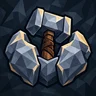 |
Mountain Stance | ×1.3 armour while slamming +30% stagger resistance while slamming +50% knockback taken while slamming |
| Shoulders of the Colossus | +50% maximum carry capacity | |
| The Earth Remembers | Slams move part of the remaining ailments of enemies hit onto the ground | |
| Colossus Leap | Club alternative attacks become a forward leap that slams the ground on landing | |
| Second Tremor | +100% aftershock chance with charged slams | |
| Fortress of the Blow | +3 fortification with slams on stagger +3 fortification with aftershocks on stagger |
|
| Stone Skin | ×1.5 armour from equipped body armour | |
| Blood of the Ancients | 50% increased effect of allocated small passives | |
| With All Your Weight | Fall height increases the area and knockback of a landing slam; maximum carry weight increases its stagger build-up |
Berserker¶
| Name | Effect | |
|---|---|---|
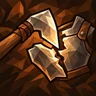 |
Tear the Iron | Your manual attacks build armour break with all of their damage, not only blunt; each point of rage gives 2% increased armour break build-up to them |
| Twin Fangs | Hold a one-handed axe in each hand. A hit with one makes the other's next blow on that enemy within 2.5 s deal 40% more damage and 50% more armour break | |
| Head Unbowed | Your endurance threshold is at least the health at the low-life boundary +25% endurance |
|
| Blood for Fear | Adrenaline is your missing health, full at low life; nothing else changes it. A full bar keeps your trinkets active, triggering at most once every 8 s | |
| First Taste of Battle | Your manual attack hits on enemies grant 2 rage, at most once per attack and within the shared rage gain limit +5 rage gained on kill +4 rage gained on stagger |
|
| Into the Open Wound | Your next manual attack on an enemy whose armour you fully broke spends your armour break on it and deals 60% more damage | |
| Tempered on the Foe | Fully breaking an enemy's armour gives your endurance 50% more effect for 6 s; a new full break renews it | |
| Past the Last Line | Adrenaline from Blood for Fear can rise past 100% as your health falls below low life 1% increased trinket effect per 1% of adrenaline past full |
|
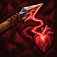 |
Red Covenant | While endurance holds, each point of rage gives 2% more life leeched from your damage |
| Break the Limit | At full rage your next manual attack starts a frenzy: rage drains away over 8 s, its effect is 50% greater, and nothing refills it until it runs out | |
| Unfinished Fight | A successful block or a perfect dodge restarts the delay before rage starts draining. It grants no rage and does not stop a frenzy |
Mead Jarl¶
| Name | Effect | |
|---|---|---|
| Mead Courage | +5 fortification on drinking a mead The fortification a mead you drink gives holds 8 s longer |
|
| Aged in the Cask | Meads have 25% more effect however they are used: drunk, kept in the barrel, thrown at enemies (poison damage) or given to allies. Applied once | |
| Feast before Battle | While a drunk mead is active, 35% of your stamina costs go into a debt (at most 40), repaid at 6 per second once you stop spending | |
| Bottle in Hand | A mead from the hotbar goes into your hand: attack throws it for 10 stamina, secondary attack drinks it. A bottle hit deals 30 (Meadows mead) to 150 (Ashlands) damage of the mead's element; it is a projectile +500 mead capacity |
|
| Cellar on the Back | A barrel on your back holds one mead (shift + right-click): its effect stays on you, 25% stronger, instant healing spread over 60 s | |
| Passing Cup | When you drink a mead, allies within 10 m get its lasting effect for 50% of its duration. Their copy does not spread further | |
| Battle Brew | Thrown meads shatter into a 2.6 m poison splash: 18 poison damage × the mead's strength, 100% poison chance. Healing never becomes damage | |
| To Your Health | A thrown mead that hits an ally gives it the mead's effect with your bonuses and never hurts it. The bottle is spent even on a miss | |
| Blend | Throwing a mead of a different family than the last adds a blend stack (up to 3): 15% more effect and damage per stack. Same family resets it | |
| The Last Drop | A thrown mead that hits an enemy prolongs one running effect of a mead you drank by 3 s, at most 30 s per effect; one prolonging per throw | |
| Endless Feast | Your barrel's mead also works on allies within 8 m of you while they stay there. The mead is not spent, the effect is not repeated per ally |
Wanderer¶
Dusk Marksman¶
| Name | Effect | |
|---|---|---|
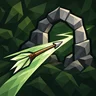 |
Beyond the Shot | 25% increased bow shooting effective range Bow hits deal up to 50% more damage the farther the target, growing from 50% of the bow's effective range to its edge; past the edge the bonus stops growing |
| Close Hunt | ×3 bow draw and reload speed ×0.3 bow shooting effective range While attack is held, a bow looses its arrow at full draw and starts drawing the next one |
|
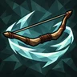 |
Aerial Aim | Drawing a bow in the air holds you up for stamina, up to 5 s per time in the air; releasing, dodging or running out of stamina ends it 30% increased bow draw and reload speed while airborne |
| Spectral Archer | A bow shot summons a spectral archer above you for 8 s that shoots enemies within 25 m with your bow for 25% of the shot's damage | |
| Return Volley | Your projectiles fly back to you, piercing enemies on the way for 35% of their damage, and repeat their impact on reaching you. Ammo is not returned ×0.5 projectile damage |
|
| Arrow Rain | Middle mouse with a bow: draw 1.5 s to mark a circle, and 1.8 s later 20× the shot's arrows rain into it, each piercing for 30% damage | |
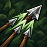 |
One Arrow | Bows loose a single arrow; every additional arrow the shot would have had gives it 30% more damage instead |
| Overdraw | Holding a fully drawn bow overdraws it: its damage rises to 100% increased over 2 s while the stamina drain is doubled; releasing or cancelling resets it | |
| Arrow on the Run | Drawing and loosing a bow slows you less, and for 1.2 s after a bow shot you can sprint without losing the next draw | |
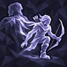 |
Off the Shoulders | The spectral archer steps down as a ghostly minion of its own: it wears copies of your weapon, shield and armour and fights at range or in melee by the weapon |
Seidman¶
Storm Lord¶
| Name | Effect | |
|---|---|---|
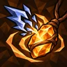 |
Thunder of Victory | Killing a shocked enemy grants 5 adrenaline (grows with adrenaline gain), once per kill - your storm's kills too |
| Split the Sky | 50% increased critical strike chance against wet targets A critical hit on a wet enemy has 50% increased shock build-up with that same hit |
|
| Ride the Storm | Hold jump to levitate on your own rain cloud; its rain (4 m, grows with area) soaks everything below. Sprint flies low and fast; riding costs stamina | |
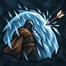 |
Mantle of Rain | While you are wet, hits from wet enemies within your presence deal you 20% reduced damage. One reduction however many there are |
| Will of Thunder | Every 1.5 s, a 35% chance that lightning strikes a random wet enemy within your presence for 50% of your weapon damage | |
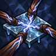 |
Conductive Flesh | 40% increased shock build-up against wet targets The first shock your hit puts on a wet enemy grants one extra Will of Thunder check, at most once every 1 s. Lightning of the storm itself never grants one |
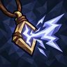 |
Echo of the Storm | Activating your trinkets gives Will of Thunder 30% more chance for 6 s (longer with buff duration). A new activation refreshes it; it never stacks |
| Open Sky | While riding your storm cloud, your area of effect grows with height, up to 100% more at 5 m. Only effects that already have an area |
Element Weaver¶
| Name | Effect | |
|---|---|---|
| Quiet Storm | Manual cold spell hits on a shocked enemy extend its existing chill by 1 s, at most 6 s ahead; they never start a chill on their own | |
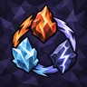 |
Three Voices | Manual spell hits grant a resonance charge of their element: fire, cold or lightning, one of each. A mixed hit counts only its strongest element |
| Memory of Flame | When your fire spell ignites a chilled enemy, up to 50% of the remaining chill (at most 3 s) becomes an instant burst of burning, and the chill melts | |
| Elemental Mantle | Each resonance charge gives 10% resistance to its element; full attunement gives 30% resistance to its element. The larger of the two counts, never both | |
| Thunder over Embers | 50% increased shock build-up against burning targets | |
| Single Voice | Casting one element in a row builds attunement: up to 4 stacks of 10% increased build-up of its ailment. Another element resets it | |
| Pattern Shift | Consuming full resonance gives your next manual cast of a different element 40% increased cast speed. One charge; triggered spells neither use nor copy it | |
| Concord of Elements | With all three resonance charges, your next manual cast consumes them and gains 30% of its damage as extra fire, cold and lightning damage, split evenly |
Armsman¶
Arena Spearman¶
| Name | Effect | |
|---|---|---|
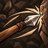 |
Measure of the Spear | A spear thrust landed at the far end of its reach empowers the next echo thrust of its series |
| Footwork in the Sand | Right after a spear thrust, dodging makes a short retreating step that keeps the echo series going; it costs stamina and grants no invulnerability | |
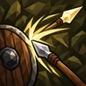 |
Champion's Answer | +1 echo thrusts on your next spear thrust that hits after a parry |
| A Rank of One | Additional strikes of a primary melee attack become echo strikes: spectral copies of the weapon strike the enemy it hit, one after another with spears +2 spear extra strikes |
|
| Ring of Points | +30% spear stagger resistance with strikes | |
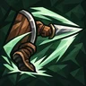 |
Answering Step | After a block, your next melee attack steps towards the attacker; after a parry, towards the enemy you aim at |
| Pinned on the Point | Echo thrusts push their target towards the point of the original thrust | |
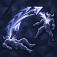 |
Next Opponent | When the target of an echo series dies, the rest of the series moves to one enemy next to it |
| Press the Line | 40% increased stagger build-up with spears with strikes When the target of an echo series is newly staggered, the rest of the series comes faster |
Phantom¶
| Name | Effect | |
|---|---|---|
| Return of the Shade | After a dodge roll, your next melee hit within 4 s causes a guaranteed phantom strike. One charge, it does not stack | |
| Dense Reflection | Your phantom strikes deal 36% of the original hit instead of 24%. Your other damage multipliers are not applied again | |
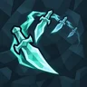 |
Endless Apparition | Phantom strikes can trigger phantom strikes ×0.75 trigger chance per successive proc with phantom strikes ×0.5 phantom strike chance |
| Manifested Form | Phantom strikes use phantom strike modifiers and can inflict ailments from their own damage. Nothing from the hit that called them applies twice | |
| Step Beyond | Your phantom strikes appear at another enemy near the one struck when there is one, and reach 50% further for it. One phantom still strikes one enemy | |
| Partial Presence | Making a phantom strike grants 40% increased evasion rating for 2.5 s. Further phantoms refresh the time, not the amount | |
| Muspelheim Reflection | Your phantom strikes deal all their damage as fire and can ignite with it. Cannot be taken with Niflheim Reflection | |
| Niflheim Reflection | Your phantom strikes deal all their damage as cold and build up chill from it. Cannot be taken with Muspelheim Reflection | |
| Marked by the Double | A phantom strike marks its enemy for 8 s. Your next manual hit on it spends the mark: 60% increased build-up of that element's ailment |
Siege Master¶
| Name | Effect | |
|---|---|---|
| Siege Order | Your manual crossbow hits mark the enemy for your ballistas for 12 s: they take it first while it is in their range and line of fire; one mark at a time | |
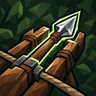 |
Thrifty Armourer | +25% chance for ballista bolts to be saved |
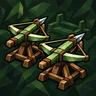 |
Siege Train | +2 ballista limit |
| Ballista on the Head | Your ballista limit is always 1 and that one ballista rides on your head: it shoots the enemies around you with a crossbow from your hotbar and your active bolts. No ballista can be set up on the ground for ballistas | |
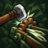 |
Ratchet Strike | Repairing your own ballista gives it 50% increased fire rate and 50% increased ailment chance and build-up for 3 s; a repeat repair renews it |
| Siege Thunder | When your mark moves to a new enemy, ready ballistas fire at it in turn, 0.2 s apart; each one's first hit deals 50% more damage. Once per 6 s | |
| Siege Crossbows | 25% increased crossbow modifier effect | |
| Wound to the Limit | Repairing your own ballista charges its next shot with the charged attack's own bonus and all your charged-attack bonuses. One charge per ballista, spent on release even on a miss; at most once per 3 s | |
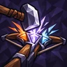 |
Runes on the Frame | Repairing your own ballista lends it your active infusion for 3 s: each shot adds 35% of the stored elemental damage |
Trickster¶
Serpent Keeper¶
| Name | Effect | |
|---|---|---|
| Know the Antidote | +3 health regeneration on poison recently (4 s) | |
| Quiet Fever | Your poison grows stronger on enemies you have not hit manually for a while | |
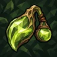 |
Venom Reserve | Part of the poison past your poison limit is kept as poison chance for your next hit on the same target |
| Shed the Skin | Dodge rolls shed part of the poison on you and leave a short poison trail | |
| Serpent Brood | When a poisoned enemy dies, part of your remaining poison on it passes to one enemy nearby | |
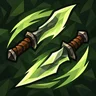 |
Two Fangs | Hitting the same enemy with a different weapon than the last one builds up poison faster |
| Squeeze the Venom | Manual critical hits on poisoned enemies make one of your poisons deal its remaining damage faster | |
| Gather the Bitterness | Killing a poisoned enemy manually stores part of your poison on it as poison chance for your next poisoning hit |
Warden¶
Steelskaldr¶
| Name | Effect | |
|---|---|---|
| Steel's Strength | +30% item durability | |
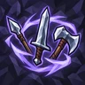 |
Living Steel | Melee weapons in the four rightmost hotbar slots come alive and fight for you. They cannot be killed: each blow they land wears the item by 40% of its damage, hits they take wear its durability point for point, and the hits they block for you wear it 0.5 per point of damage. Their durability is their health: minion life and construct durability raise its maximum. The first living weapon reserves no eitr, the second reserves 40, and each one after it twice as much as the one before |
| Eternal Forge | Your equipped items and living weapons restore 1% of their maximum durability per second, even in combat; a broken living weapon returns at 30% | |
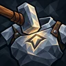 |
Maker's Mark | Each worn armour piece's own base armour, evasion and rune shield are 6% increased per 100 of its maximum durability, at most 60% |
| Edge of Ages | +3 base damage per 100 of a weapon's current durability, split over its own damage types. Weapons in your hands and living weapons | |
| Shared Temper | Your living weapons inherit 50% of your fitting increased damage and attack speed. Your own damage is ×0.25 | |
| Hammer's Order | Your manual hit names the target of your living weapons; their attacks on it come one after another, 0.3 s apart, for 8 s | |
| Weapon Bulwark | While you block, your living weapons stop attacking and circle you; they take 40% of each hit that reaches you on their durability, as much as they can hold | |
| Call of the Anvil | Recalling a living weapon with its hotbar key makes it dash back to you, striking every enemy on the way. 8 s cooldown | |
| One with the Steel | Your living weapons' blows count as your own hits, so all your passives and on-hit effects apply. Living weapons: ×0.5 attack speed, ×0.5 damage |
Fatebinder¶
| Name | Effect | |
|---|---|---|
| Spectral Response | A linked ally's attack launches a spectral attack with the bearer's weapon against the same target. | |
| Thread of Memory | Staff links remain for five seconds after the last contact. Link retention bonuses extend this time. | |
| The Last Thread | Linked allies cannot die from damage. You take 200% of the damage they take, even at 1 health. | |
| Power of Charms | 50% increased trinket effect | |
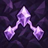 |
Shared Fate | +2 linked ally limit |
| Shared Circle | Nearby allies automatically become linked, independently of the manual link limit. ×0.4 link effect ×0.4 adrenaline gain for linked allies |
|
| Shared Pulse | +50% adrenaline gain | |
| Bearer of Charms | +1 trinket slot |
Data from Path of Valheiman 6.0.12, extracted 2026-11-13.